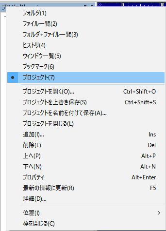

秀丸エディタ Ver.8.00以降では、ファイルマネージャ枠が使用できます。
ファイルマネージャ枠は、名前の通り、ファイル/フォルダの一覧を表示するための枠です。
メニューの「表示」から、ファイルマネージャ枠の表示の切り替えが可能です。

ファイルマネージャ枠には以下の内容が表示可能です。
ツールバーの表示項目部分が「ボタン」になっていて、左クリックで切り替えメニューが表示されます。

ツールバーや、ファイルマネージャ枠内で右クリックするか、ツールバーの▼部分を左クリックすると、 各種設定込みの切り替えメニューが表示されます。(切り替え以降のメニュー項目は、表示している内容によって切り替わります。)

その名の通り、
を表示する枠です。
フォルダの一覧は、エクスプローラのフォルダツリー部分のみのと同じです。 フォルダを選択する(ダブルクリック or Enterキー押下)と、「ファイル一覧」に切り替わります。
ファイルの一覧は、選択されたフォルダにあるファイルの一覧を表示します。 設定により、「サブフォルダ」を表示する/しない を切り替える事が出来ます。 ファイルを選択する(ダブルクリック or Enterキー押下)と、ファイルの種類に関係なく、 秀丸エディタで開きます。その為、テキストファイルでないファイルも秀丸エディタで開きます。
注意
ファイルマネージャ枠の右クリックメニューにある「詳細」を選ぶと、 ファイルマネージャ枠の設定画面が開きます。
「一般」はファイルマネージャ枠の表示に関する設定です。

「フォルダ/ファイル一覧」はフォルダ/ファイル一覧 表示に関する設定です。

フォルダモードの「ファイル表示」は、フォルダーツリーにフォルダだけではなく、 ファイルを表示する為の設定になります。

「カスタム」で表示する拡張子を指定できます。 「すべて」だと、ファイル数が多いと時間がかかる場合があります。
「既定のワイルドカード」の場合は、 [その他]→[動作環境]→[ファイル]→[最初のワイルドカード]と同じになります。
ファイルモードの「ファイル表示」は、ファイル一覧の表示設定です。
「既定のワイルドカード」の場合は、 [その他]→[動作環境]→[ファイル]→[最初のワイルドカード]と同じになります。
「カスタム」で表示する拡張子を指定できます。複数の拡張子を指定する場合は、 ";" で区切って入力してください。
例)*.txt;*.html秀丸エディタ本体にある、ファイルヒストリと同じです。 メニューで表示するか、枠内に常時表示するかの違いです。
右クリックメニューから、選択したヒストリの削除が可能です。
秀丸エディタ本体にある、ウィンドウ一覧と同じです。 ウインドウで表示するか、枠内に常時表示するかの違いです。
右クリックメニューから、選択したウィンドウを閉じる事が可能です。
秀丸エディタ本体にある、ブックマークと同じです。 メニューで表示するか、枠内に常時表示するかの違いです。
右クリックメニューから、ブックマークの操作(追加/削除/上/下)が可能です。
「追加」を行うと以下の画面が表示されます。

「ファイル」はファイルを、「グループ」は分類用のフォルダを、「セパレータ」は区切り線を追加します。
「フォルダ内のファイル一覧」は、グループを作成し、指定された拡張子のファイルを自動的に追加します。
ブックマークと同様、必要なファイルをまとめた一覧です。 場合によって切り替える、ブックマークみたいな物です。
右クリックメニューから、プロジェクトの操作(開く/上書き/名前を付けて保存/追加/削除/上/下)が可能です。
「追加」を行うと、ブックマークと同じ画面が開きます。

ブックマークと違うのは、変更した場合は、名前を付けて保存する必要がある事と、 複数のプロジェクトファイルを使い分ける事ができる事です。
設定で、プロジェクトを編集した場合に、直ぐに保存するようできますが、 名前を付けていない場合(デフォルト状態)では無視されます。

「フォルダ/ファイル/フォルダ+ファイル一覧」は、現在編集中のファイルの場所とは、リンクしていません。 その為、ファイルを切り替えても、自動的に開く場所が切り替わる事はありません。
現在編集のファイルがある場所を開きたい場合は、明示的に「同期」コマンドを実行する必要があります。
自動起動マクロに「アクティブ切り替え後」があるので、「同期」コマンドを実行すればいいでしょう。
プロジェクトは、ファイルを追加するのは、一個ずつしか登録できません。 「フォルダ内のファイル一覧」を使えば、拡張子を指定してまとめて追加できますが、 不要なファイルまで含まれる場合もあります。
プロジェクトファイルの構造は簡単なので、登録するファイルが多い場合は、フルパスのファイルリストを作り、 そこから編集した方が早い場合もあります。
ファイル構造はブックマークと同じです。 秀丸エディタヘルプ-ブックマークの整理 の内容と、実際のプロジェクトファイルを開いてみてください。